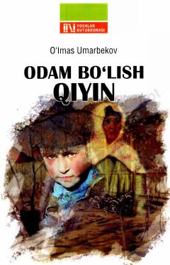

OBTohir Malik ilm va haqiqiy insoniylik haqida hikmatli suhbatlar yuritadi.
Ushbu kitob O'zbekiston xalq yozuvchisi Tohir Malikning ilm, ma'rifat va insoniylik fazilatlari haqidagi suhbatlarini o'z ichiga oladi. Muallif 'Olim bo'lish oson, odam bo'lish qiyin' maqolidan kelib chiqib, haqiqiy insoniylik va bilim haqida chuqur mulohazalar yuritadi. Avval e'lon qilingan suhbatlar yangi hikmatlar bilan to'ldirilgan holda kitobxonlarga taqdim etilgan.